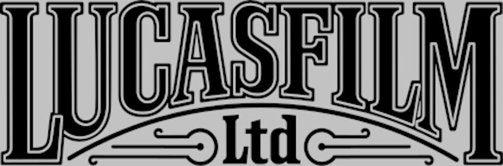

Lucasfilm Ltd. LLC is an American film and television production company that is a subsidiary of The Walt Disney Studios, a division of The Walt Disney Company. The studio is best known for creating and producing the Star Wars and Indiana Jones franchises, as well as its leadership in developing special effects, sound and computer animation for film. Lucasfilm was founded by filmmaker George Lucas in 1971 in San Rafael, California; most of the company's operations were moved to San Francisco in 2005.
Disney acquired Lucasfilm in December 2012 for $2.2 billion in cash and $1.855 billion in stock.
Films
American Graffiti (1973)
Star Wars (1977)
More American Graffiti (1979)
Empire Strikes Back (1980)
Raiders of the Lost Ark (1981)
Return of the Jedi (1983)
Twice Upon a Time (1983)
Indiana Jones and the Temple of Doom (1984)
Latino (1985)
Mishima: A Life in Four Chapters (1985)
Labyrinth (1986)
Howard the Duck (1986)
Willow (1988)
Tucker: The Man and His Dream (1988)
Land Before Time (1988)
Indiana Jones and the Last Crusade (1989)
Radioland Murders (1994)
Star Wars: Episode I – The Phantom Menace (1999)
Star Wars: Episode II – Attack of the Clones (2002)
Star Wars: Episode III – Revenge of the Sith (2005)
Indiana Jones and the Kingdom of the Crystal Skull (2008)
Star Wars: The Clone Wars (2008)
Red Tails (2012)
Strange Magic (2015)
Star Wars: The Force Awakens (2015)
Rogue One: A Star Wars Story (2016)
Star Wars: The Last Jedi (2017)
Solo: A Star Wars Story (2018)
Star Wars: The Rise of Skywalker (2019)
Other Productions
A Force Wrecking Ball, Part 2: The Characters of "The Force Unleashed" (2008)
Adventures of André &Wally B. (1984)
Adventures of Young Indiana Jones Documentaries (2007–2008)
All seven episodes of Lego Star Wars: The Yoda Chronicles (2013)
Beginning: Making "Episode I" (2001)
Birth of the Lightsaber (2004)
Captain EO Promo &Pre-show (1986)
Captain EO (1986)
Caravan of Courage: An Ewok Adventure (1984)
Characters of 'Star Wars' (2004)
Chosen One (2005)
Clash at the Cantina (2014)
Classic Creatures: Return of the Jedi (1983)
Clone Wars: Bridging the Saga (2005)
Clone Wars: Connecting the Dots (2005)
Daisy Ridley Exclusive Q&A (2016)
Defenders of Dynatron City (1992)
Director and the Jedi (2018)
Double Victory: The Tuskegee Airmen at War (2012)
Empire of Dreams: The Story of the Star Wars Trilogy (2004)
Ewoks: The Battle for Endor (1985)
ExtraTERRORestrial Alien Encounter (1994)
Fan Film (2007)
Filmmaker (1968)
Films Are Not Released, They Escape (2002)
Force Is with Them: The Legacy of "Star Wars" (2004)
From Puppets to Pixels: Digital Characters in "Episode II" (2002)
From Star Wars to Jedi: The Making of a Saga (1983)
Great Heep (1986)
Indiana Jones Adventure: Temple of the Forbidden Eye (1995)
Indiana Jones and the Ultimate Quest (2008)
It's All for Real: The Stunts of Episode III (2005)
Kathleen Kennedy 2013 Pioneer of the Year Award Tribute Reel (2013)
Lego Indiana Jones and the Raiders of the Lost Brick (2008)
LEGO Star Wars: All-Stars (2018)
Lego Star Wars: Bombad Bounty (2010)
Lego Star Wars: Droid Tales (2015)
Lego Star Wars: Revenge of the Brick (2005)
Lego Star Wars: The Empire Strikes Out (2012)
Lego Star Wars: The Freemaker Adventures (2016)
Lego Star Wars: The Padawan Menace (2011)
Lego Star Wars: The Quest for R2-D2 (2009)
Lego Star Wars: The Resistance Rises (2016)
Live from the Red Carpet of Solo: A Star Wars Story! (2018)
Live from the Red Carpet of Star Wars: The Last Jedi (2017)
Making of "Captain Eo" (1986)
Making of "Indiana Jones and the Temple of Doom" (1985)
Making of "Raiders of the Lost Ark" (1981)
Making of Star Wars (1977)
Making of Star Wars: In Concert (2009)
Making the Game: "Star Wars: Episode III Revenge of the Sith" (2004)
Mandalorian (2019)
Maniac Mansion (1990–1993)
Manifest Destiny (2012)
On Set with "Raiders of the Lost Ark" (2012)
Our Star Wars Stories (2018)
Paula Abdul: Rush Rush (music video; 1991)
Phantom Menace: Web Documentaries (1998)
R2-D2: Beneath the Dome (2001)
Rebels Recon (2014)
Reflections (2018)
Return of the Ewok (1982)
Revenge of the Sith: Web Documentaries (2005)
Robot Chicken: Star Wars Episode II (2008)
Robot Chicken: Star Wars Episode III (2010)
Robot Chicken: Star Wars (2007)
Rogue One: A Star Wars Story—World Premiere (2016)
Rogue One: Recon—A Star Wars 360 Experience (2016)
Science and Star Wars (2017)
Science of Star Wars (2005)
SP FX: The Empire Strikes Back (1980)
Spike TV Segments (2008)
Star Tours – The Adventures Continue (2011)
Star Tours (1987)
Star Wars Blips (2017)
Star Wars Celebration Live Anaheim (2015)
Star Wars Comic Con 09 Spectacular (2009)
Star Wars Episode III: Becoming Obi-Wan (2005)
Star Wars Episode III: Seduction Spot (2005)
Star Wars Galaxy of Adventures (2018)
Star Wars Heroes &Villains (2005)
Star Wars Holiday Special (1978)
Star Wars Show LIVE! Celebration Europe (2016)
Star Wars Show LIVE! Celebration Orlando (2017)
Star Wars Show (2016)
Star Wars Tech (2007)
Star Wars: A Musical Journey (2005)
Star Wars: Connections (2002)
Star Wars: Episode VII—Toys (2015)
Star Wars: Launch Bay—Meet the Makers (2015)
Star Wars: Star Warriors (2007)
Star Wars: Starfighter, the Making of the Game (2001)
Star Wars: The Clone Wars Preview Special (2008)
Star Wars: The Complete Saga (2011)
Star Wars: The Force Awakens World Premiere Red Carpet (2015)
Star Wars: The Legacy Revealed (2007)
State of the Art: The Pre-Visualization of "Episode II" (2002)
Story of Star Wars (2004)
TFU Experience: Unleashing the Force on Your Favorite Console (2008)
Transmission CVI: AUG 23, 2012 (2012)
Unleashing the Force, Part 1: The New Beginning (2008)
Unleashing the Tech: The Power Behind the Force (2008)
Untitled Cassian Andor series (2021)
Untitled Obi-Wan Kenobi series (TBA)
Untitled Willow sequel series (TBA)
Warrior Make-up (2008)
Within a Minute: The Making of "Episode III" (2005)
Words with Warwick (2013)
Wow! (1990)
You Can Draw "Star Wars" (2007)
Young Indiana Jones Chronicles (1992)